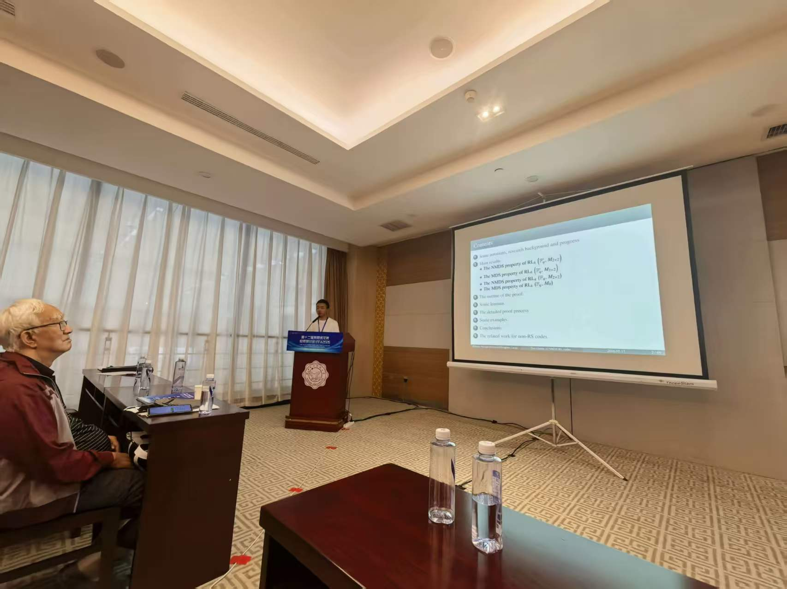
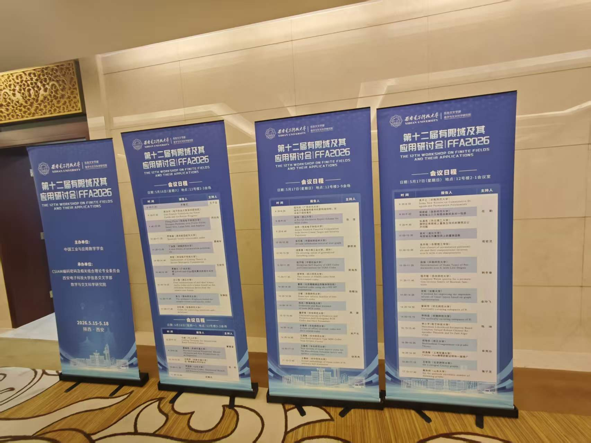
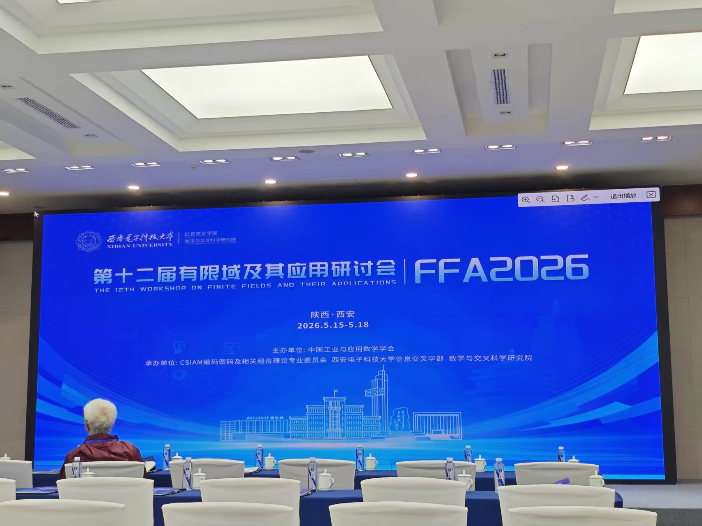

Zhonghao Liang
梁钟浩
Sichuan Normal University
Chengdu, Sichuan, China
Education Background
教育背景
-
Bachelor of Science in Mathematics
School of Mathematics, Aba Teachers University, Wenchuan, Sichuan
September 2019 – June 2023
Supervisor: Prof. Shichun Yang -
Master's degree in progress
School of Mathematical Sciences, Sichuan Normal University
September 2024 – Present
Supervisor: Prof. Qunying Liao
Research Interests
研究方向
-
Algebraic Coding Theory over Finite Fields
-
Elementary Number Theory
Teaching Assistant Experience
教学经历
-
Abstract Algebra
School of Mathematical Sciences, Sichuan Normal University
September 2024 – January 2025 -
Elementary Number Theory
School of Mathematical Sciences, Sichuan Normal University
March 2025 – July 2025
Awards & Honors
获奖与荣誉
-
"Merit Student" Honor, Aba Teachers University
2019 – 2020 Academic Year -
President's Scholarship for Graduate Students, Sichuan Normal University
2024 Year -
First-Class Academic Scholarship for Graduate Students, Sichuan Normal University
2025 Year -
"Merit Student" Honor for Master's degree student, Sichuan Normal University
2025-2026 Academic Year
Hosted/Participated Projects
主持/参与的项目
-
Hosted Project
Exploration of the Properties of Generalized Roth-Lempel Codes
Sichuan Normal University Graduate Student Innovation Ability Development Program
2025 – 2026
Project No.: KY2025022
Supervisor: Prof. Qunying Liao -
Hosted Project
Research on Stability of a Class of Quasilinear Differential Equations
University-Level Quality Project of Aba Teachers University & Sichuan Provincial College Student Innovation Training Program
2020 – 2023
Project No.: 202020115 (University-Level) & S202110646050 (Provincial)
Supervisor: Assoc. Prof. Biao Dong
Publications
已发表论文
Liang Z, Yang S C. Further intensification of an inequality about the number of prime numbers[J]. Journal of Science of Teachers' College and University , 2024, 44(02): 6–8+14. (In Chinese)
Liang Z, Yang S C, Liao Q Y. Further refinement of estimates of $p_k$ and $\sum\limits_{k=1}^{n}kp_k$ true bounds[J]. College Mathematics , 2025, 41(01): 16–22. (In Chinese)
ArXiv Preprints
ArXiv预印本
Conference Experience
参会经历


